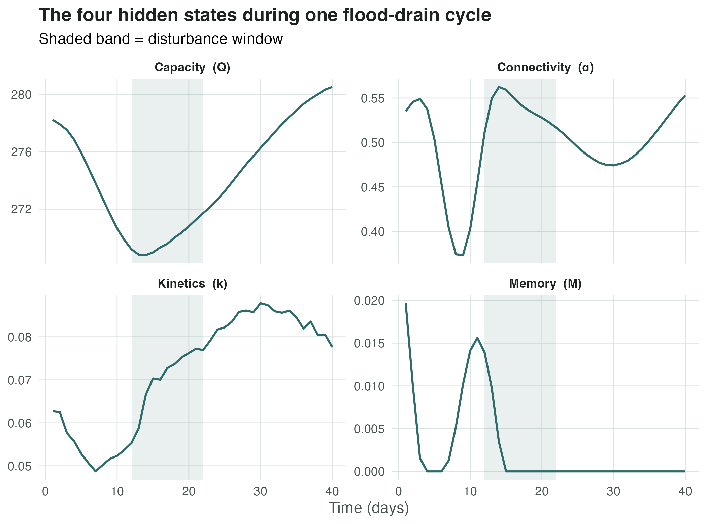
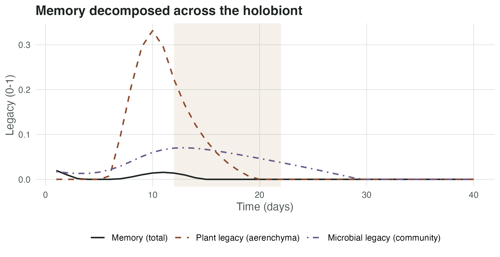
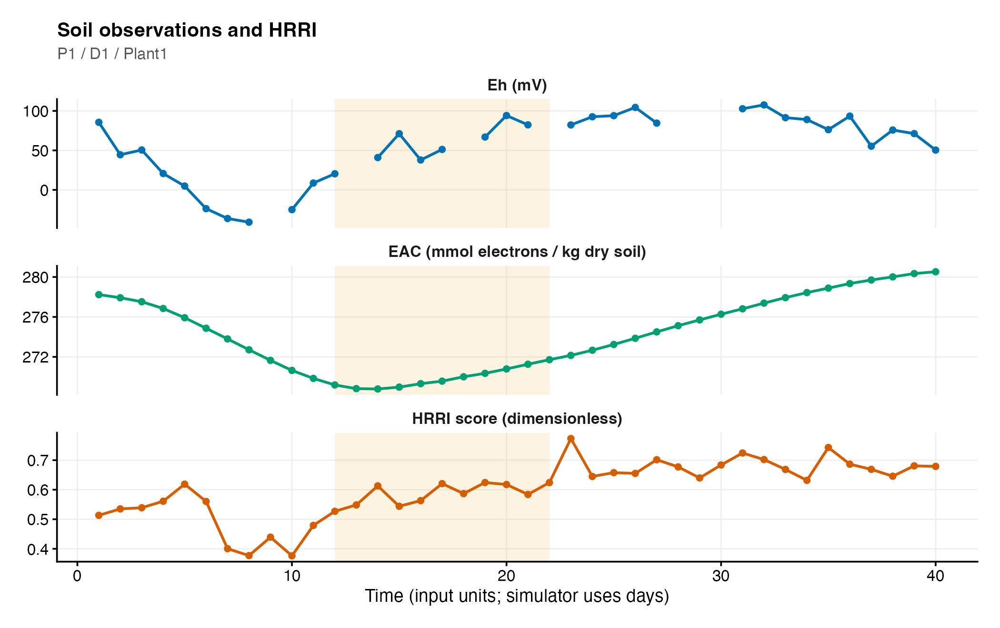
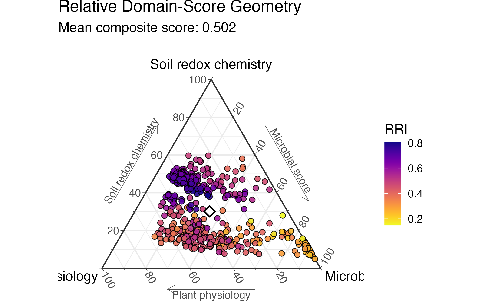
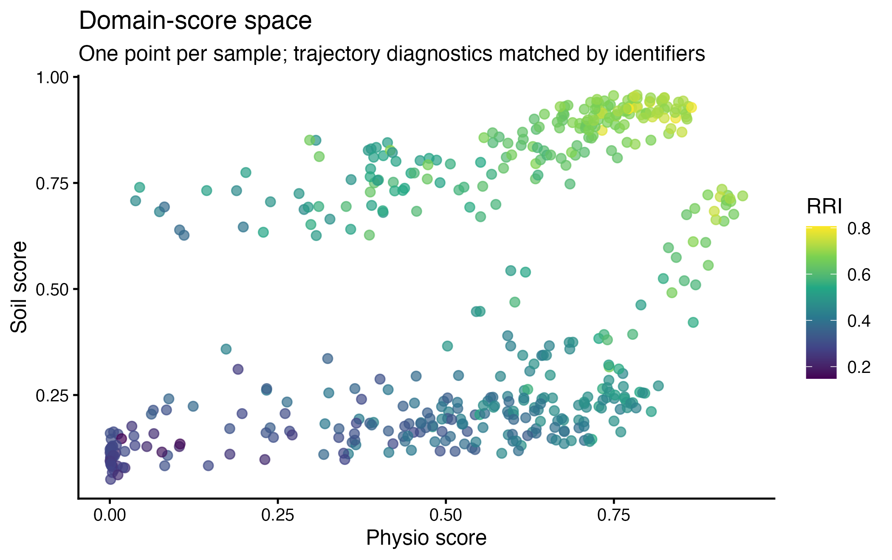
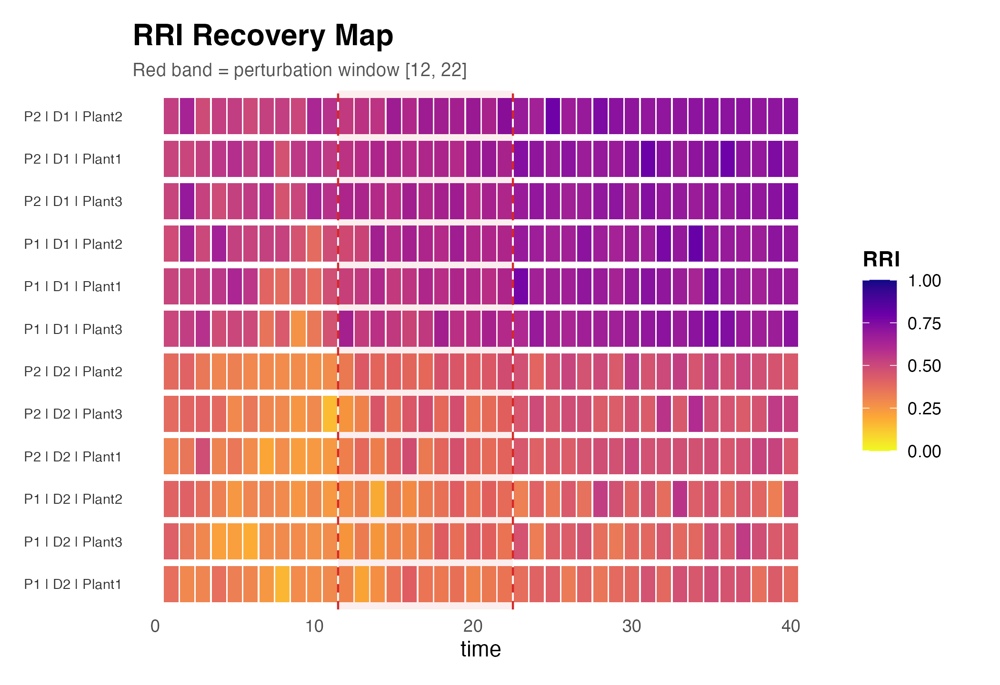
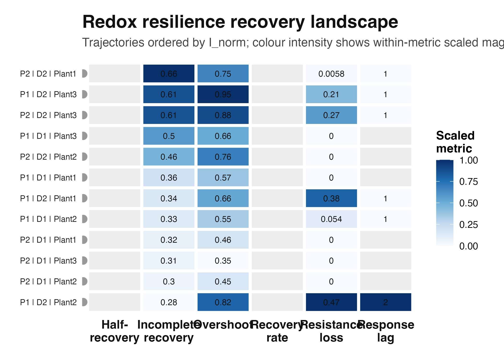
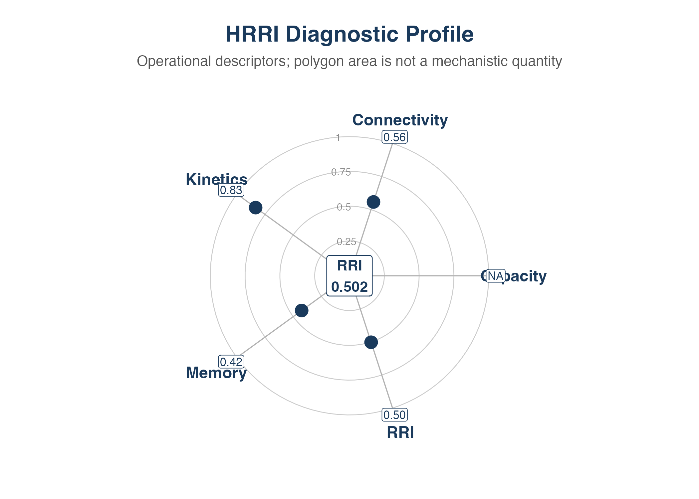
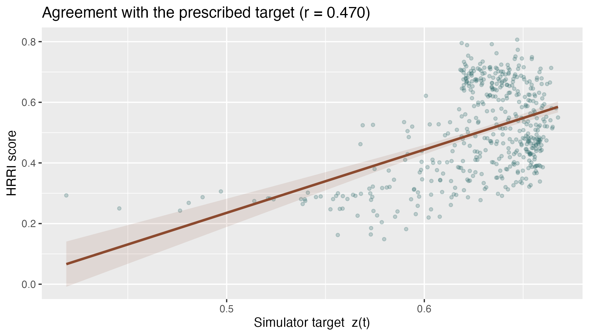

HRRI: Reading the Figures — A Worked Example
Mitra Ghotbi
mitra.ghotbi@gmail.com2026-09-02
Source:vignettes/HRRI_gallery.Rmd
HRRI_gallery.RmdHow to use this vignette
The companion vignette, vignette("HRRI_workflow"), shows
how to run HRRI. This one shows how to read what comes
out.
We follow a single simulated experiment from beginning to end. Every figure is produced from that one experiment, so the panels connect: the trajectory you see in Section 4 is the same trajectory summarised in Section 6 and ranked in Section 7.
Each figure is followed by two short blocks:
Reading it — what the axes mean and what pattern to look for.
What it does not show — the inference the figure cannot support. HRRI is deliberately conservative, and these limits are part of the method, not disclaimers bolted on afterwards.
library(HRRI)
library(ggplot2)
packageVersion("HRRI")
#> [1] '0.99.2'The experiment
One flood–drain cycle across two plots, two depths and three plants, observed daily for 40 steps. The disturbance runs from day 12 to day 22.
PERTURB_START <- 12
PERTURB_END <- 22
sim <- simulate_redox_holobiont(
n_plot = 2,
n_depth = 2,
n_plant = 3,
n_time = 40,
p_micro = 25,
seed = 2026,
scenario = "flood_drain",
n_cycles = 1,
disturbance_strength = 0.72,
history_strength = 0.55
)
nrow(sim$id) # 2 x 2 x 3 x 40 = 480 observations
#> [1] 480
names(sim$latent_state)
#> [1] "Q_accept" "Q_donate" "alpha_accept"
#> [4] "alpha_donate" "k_accept_h" "k_donate_h"
#> [7] "memory" "micro_legacy" "plant_legacy"
#> [10] "redox_position" "Cacc_EAC" "Cacc_EDC"
#> [13] "net_oxidative_balance"latent_state is the simulator’s ground truth. It exists
so we can check whether HRRI recovers what it is meant to recover. With
real data there is no such column, and nothing in the scoring path is
allowed to read it.
The four hidden states, made visible
HRRI rests on four controls that are never measured directly. In simulation we can plot them, which is the clearest way to build intuition for what the index is chasing.
ls_df <- as.data.frame(sim$latent_state)
one <- with(sim$id, plot == "P1" & depth == "D1" & plant_id == "Plant1")
hidden <- data.frame(
time = sim$id$time[one],
value = c(
ls_df$Q_accept[one],
ls_df$alpha_accept[one],
ls_df$k_accept_h[one],
ls_df$memory[one]
),
state = factor(
rep(c("Capacity (Q)", "Connectivity (α)",
"Kinetics (k)", "Memory (M)"), each = sum(one)),
levels = c("Capacity (Q)", "Connectivity (α)",
"Kinetics (k)", "Memory (M)")
)
)
ggplot(hidden, aes(time, value)) +
annotate("rect", xmin = PERTURB_START, xmax = PERTURB_END,
ymin = -Inf, ymax = Inf, fill = "#2f6b6b", alpha = 0.10) +
geom_line(colour = "#2f6b6b", linewidth = 0.7) +
facet_wrap(~ state, scales = "free_y", ncol = 2) +
labs(x = "Time (days)", y = NULL,
title = "The four hidden states during one flood-drain cycle",
subtitle = "Shaded band = disturbance window") +
theme(legend.position = "none")
Reading it — Capacity is the electron inventory and moves slowly. Connectivity collapses during flooding as pore pathways close, then partially reopens. Kinetics tracks the rate of exchange. Memory is the one that does not come back: it ratchets upward and stays there. That asymmetry is the whole point of the framework.
Memory is a holobiont state
Since version 0.99.2, memory accumulates from four sources spanning all three domains, not from iron chemistry alone. The components are exported so the decomposition can be checked rather than assumed.
mem <- data.frame(
time = rep(sim$id$time[one], 3),
value = c(ls_df$memory[one],
ls_df$plant_legacy[one],
ls_df$micro_legacy[one]),
component = factor(
rep(c("Memory (total)", "Plant legacy (aerenchyma)",
"Microbial legacy (community)"), each = sum(one)),
levels = c("Memory (total)", "Plant legacy (aerenchyma)",
"Microbial legacy (community)")
)
)
ggplot(mem, aes(time, value, colour = component, linetype = component)) +
annotate("rect", xmin = PERTURB_START, xmax = PERTURB_END,
ymin = -Inf, ymax = Inf, fill = "#9a6a24", alpha = 0.10) +
geom_line(linewidth = 0.7) +
scale_colour_manual(values = c("#1c2321", "#8c4a2f", "#6b5b8a")) +
scale_linetype_manual(values = c("solid", "dashed", "dotdash")) +
labs(x = "Time (days)", y = "Legacy (0-1)", colour = NULL, linetype = NULL,
title = "Memory decomposed across the holobiont")
Reading it — the microbial legacy rises quickly under sustained reduction and relaxes slowly afterwards. That asymmetry is deliberate: a component that tracked current conditions symmetrically would be a readout, not a memory.
What it does not show — that these are the correct weights. They are illustrative (0.020 event load, 0.016 Fe ratchet, 0.012 plant, 0.012 microbial) and are not calibrated to measured legacy effects in any field system.
Scoring the three domains
res <- rri_pipeline_st(
ROS_flux = sim$ROS_flux,
Eh_stability = sim$Eh_stability,
micro_data = sim$micro_data,
id = sim$id,
time_col = "time",
group_cols = c("plot", "depth", "plant_id"),
mode = "snapshot",
reducer = "per_domain",
scaling = "pnorm",
direction_anchor_phys = "FvFm",
direction_anchor_soil = "Eh",
direction_anchor_micro = "ASV1"
)
scored <- attach_hrri_ids(res$row_scores, sim$id)
attr(scored, "id_alignment")
#> $method
#> [1] "row_id"
#>
#> $key
#> [1] "row_id"
#>
#> $n_rows
#> [1] 480
#>
#> $n_matched
#> [1] 480
#>
#> $cols_added
#> character(0)
#>
#> $cols_shared
#> [1] "plot" "depth" "plant_id" "time"
#> [5] "unit_id" "history_pair" "history" "scenario"
#> [9] "rescue" "cycle" "phase" "event_intensity"
#> [13] "WFPS" "water_table_cm"
summary(scored$RRI)
#> Min. 1st Qu. Median Mean 3rd Qu. Max.
#> 0.1485 0.3859 0.4887 0.5024 0.6454 0.8065The direction_anchor_* arguments are not optional in
practice. Latent axes from PCA have arbitrary sign; without an anchor
variable whose direction you can justify, a high RRI could mean the
opposite of what you intend. The function warns when anchors are
missing.
One trajectory in context
plot_rri_timeseries(
sim, res,
plot_id = "P1",
depth_id = "D1",
plant_id = "Plant1",
perturb_start = PERTURB_START,
perturb_end = PERTURB_END
)
Reading it — Eh, accessible capacity and the composite RRI on a shared time axis in separate panels, each in its own units. Look for whether RRI returns to its pre-event level, and whether it returns at the same time as Eh. A gap between the two is the interesting case.
What it does not show — panels are not placed on a common axis, because Eh (mV) and RRI (dimensionless) are not commensurable. Visual co-movement is not evidence of a mechanistic link.
Where the domains sit relative to each other
## ggtern is a Suggests dependency and, at the time of writing, is not
## compatible with ggplot2 >= 3.5 (it errors on tern.axis.ticks.length.major).
## Render defensively so the vignette builds either way.
tern_ok <- requireNamespace("ggtern", quietly = TRUE) &&
requireNamespace("viridis", quietly = TRUE)
if (tern_ok) {
p_tern <- try(
plot_RRI_ternary(res$row_scores_comp, point_size = 2.4,
show_centroid = TRUE),
silent = TRUE
)
drawn <- !inherits(p_tern, "try-error") &&
!inherits(try(print(p_tern), silent = TRUE), "try-error")
if (!drawn) {
cat("*The ternary plot could not be rendered: the installed **ggtern** is",
"incompatible with this **ggplot2** version. The composition it would",
"show is summarised numerically below.*\n\n")
}
} else {
cat("*Install **ggtern** and **viridis** to render this figure.*\n\n")
}
Whether or not the ternary renders, the same information is available directly from the compositional table — each row sums to one across the three domains:
comp <- res$row_scores_comp[, c("Physio", "Soil", "Micro")]
round(colMeans(comp, na.rm = TRUE), 3) # centroid
#> Physio Soil Micro
#> 0.357 0.301 0.342
round(range(rowSums(comp, na.rm = TRUE)), 6) # closure check: both 1
#> [1] 1 1Reading it — each point is one observation placed by the relative weight of its Physiology, Soil and Microbial scores. Points near a vertex are dominated by that domain. The white diamond is the centroid. Movement of the cloud toward a vertex over an event means the domains are responding unequally.
What it does not show — position is compositional, so it discards magnitude. Two samples with very different absolute RRI sit at the same point if their domain ratios match. Always read the ternary alongside Section 4.
Domain-score state space
plot_rri_state_space(
res,
x_property = "Physio",
y_property = "Soil",
colour_by = "RRI",
group_cols = c("plot", "depth", "plant_id")
)
Reading it — the trajectory through domain space. Disturbance typically pushes points toward the origin; recovery is the return path. A return that does not retrace its outbound path is hysteresis, and it is visible here as an open loop.
What it does not show — the axes are domain composite scores, not the hidden states of Section 3. Physiology is not Kinetics; Soil is not Capacity. Relabelling them as mechanistic properties would be a category error.
Recovery signatures
rec <- rri_recovery_metrics(
res = res,
id = sim$id,
time_col = "time",
group_cols = c("plot", "depth", "plant_id"),
perturb_start = PERTURB_START,
perturb_end = PERTURB_END,
rri_col = "RRI"
)
rec[1:4, c("plot", "depth", "plant_id", "baseline_rri", "depth_min_frac",
"tau_lag", "overshoot_frac", "incomplete_return_frac",
"displaced_plateau_flag", "fit_status")]
#> plot depth plant_id baseline_rri depth_min_frac tau_lag overshoot_frac
#> 1 P1 D1 Plant1 0.4909106 0.000000000 NA 0.5748788
#> 2 P2 D1 Plant1 0.5445569 0.000000000 NA 0.4606396
#> 3 P1 D2 Plant1 0.2922408 0.378237014 1 0.6628952
#> 4 P2 D2 Plant1 0.2971187 0.005848721 1 0.7475780
#> incomplete_return_frac displaced_plateau_flag fit_status
#> 1 0.3616705 FALSE no_resolvable_decline
#> 2 0.3180095 FALSE no_resolvable_decline
#> 3 0.3403944 FALSE insufficient_positive_deficits
#> 4 0.6611020 FALSE insufficient_positive_deficitsReading it — one row per trajectory.
depth_min_frac is how far the score fell relative to
baseline; tau_lag is how long recovery took to begin;
incomplete_return_frac is the terminal shortfall.
fit_status reports whether the rate estimate is trustworthy
— always read k together with it.
What it does not show —
alt_routing_flag is retained as NA on purpose.
A displaced plateau is consistent with alternative electron routing but
does not establish it, so the package refuses to claim otherwise. Use
displaced_plateau_flag and describe it as a
displacement.
Recovery map across all trajectories
plot_rri_recovery_map(
res = res,
id = sim$id,
rec = rec,
time_col = "time",
group_cols = c("plot", "depth", "plant_id"),
perturb_start = PERTURB_START,
perturb_end = PERTURB_END
)
Reading it — one row per trajectory, colour = RRI through time. Scan vertically at any time point to compare units; scan horizontally to follow one unit. Rows that stay dark to the right of the disturbance band did not recover.
Ranking trajectories by signature
## Name the metrics explicitly rather than relying on the function default.
## Older HRRI builds defaulted to A_norm / O_norm / tau_r, which
## rri_recovery_metrics() no longer produces; being explicit makes this chunk
## work against either version and documents which signatures are shown.
plot_rri_recovery_landscape(
rec,
metrics = intersect(
c("depth_min_frac", "overshoot_frac", "I_norm", "k", "tau_lag", "t_half"),
names(rec)
),
order_by = "I_norm"
)
Reading it — trajectories as rows, recovery signatures as columns, each column scaled within the cohort. It answers “which units behaved similarly, and on which signature do they differ?” — the ordering is by incomplete return.
What it does not show — scaling is cohort-relative, so a “high” cell means high within this run, not high in absolute terms. Two datasets cannot be compared cell-by-cell.
Property diagnostics
props <- rri_property_scores(res, rec = rec)
props$property_table
#> property score method available
#> 1 Capacity NA unavailable FALSE
#> 2 Connectivity 0.5576013 cross_domain_magnitude TRUE
#> 3 Kinetics 0.8333333 Cohort-relative recovery speed TRUE
#> 4 Memory 0.4247667 Loop-area/persistent-displacement diagnostic TRUE
plot_rri_properties(props, rri_value = mean(scored$RRI, na.rm = TRUE))
Reading it — the four diagnostics on one radar. Unavailable properties stay missing rather than being imputed, so a short spoke means “not supported by the supplied data”, not “low”.
What it does not show — these are named
after the four controls but are not measurements of them. Capacity
here is an oxidative-oriented feature composite; Connectivity is an
association descriptor; Kinetics is a recovery-speed descriptor; Memory
is a persistent-displacement descriptor. Check
props$property_table to see the method behind each
score.
Did HRRI recover the hidden state?
Because the simulator defines a target, we can check agreement directly. This is an internal consistency check, not empirical validation.
ok <- is.finite(scored$RRI) & is.finite(sim$latent_truth)
r <- stats::cor(scored$RRI[ok], sim$latent_truth[ok])
cat("r(RRI, latent_truth) =", round(r, 3), "on", sum(ok), "observations\n")
#> r(RRI, latent_truth) = 0.47 on 480 observations
ggplot(data.frame(truth = sim$latent_truth[ok], RRI = scored$RRI[ok]),
aes(truth, RRI)) +
geom_point(alpha = 0.25, size = 1.1, colour = "#2f6b6b") +
geom_smooth(method = "lm", formula = y ~ x, se = TRUE,
colour = "#8c4a2f", fill = "#8c4a2f", alpha = 0.12) +
labs(x = "Simulator target z(t)", y = "HRRI score",
title = sprintf("Agreement with the prescribed target (r = %.3f)", r))
What it does not show — this is agreement with a target we defined. It demonstrates that the scoring path is internally coherent. It is not predictive accuracy, not held-out error, and not evidence that HRRI tracks resilience in any real soil.
Using your own data
Every function above accepts plain data frames. Replace the simulator with your own measurements, keeping rows aligned across blocks:
res <- rri_pipeline(
soil = my_soil, # Eh, pH, Fe pools, EAC/EDC ...
plant = my_plant, # SPAD, Fv/Fm, ROL ...
micro = my_micro, # ASV table or functional genes
id = my_ids, # plot, depth, plant_id, time
direction_anchor_soil = "Eh",
direction_anchor_phys = "FvFm"
)Missing a domain is fine — supply what you have. Absent domains stay
NA, remaining weights renormalise per row, and coverage is
reported so a reduced panel is never silently treated as a complete
one.
A reduced panel changes the estimand. Scores from a soil-only run and
a three-domain run are not interchangeable; compare them through
rri_sensitivity() rather than assuming equivalence.
Session information
sessionInfo()
#> R version 4.5.1 (2025-06-13)
#> Platform: aarch64-apple-darwin20
#> Running under: macOS Tahoe 26.5.1
#>
#> Matrix products: default
#> BLAS: /Library/Frameworks/R.framework/Versions/4.5-arm64/Resources/lib/libRblas.0.dylib
#> LAPACK: /Library/Frameworks/R.framework/Versions/4.5-arm64/Resources/lib/libRlapack.dylib; LAPACK version 3.12.1
#>
#> locale:
#> [1] en_US.UTF-8/en_US.UTF-8/en_US.UTF-8/C/en_US.UTF-8/en_US.UTF-8
#>
#> time zone: Europe/Berlin
#> tzcode source: internal
#>
#> attached base packages:
#> [1] stats graphics grDevices utils datasets methods base
#>
#> other attached packages:
#> [1] ggplot2_4.0.3 HRRI_0.99.2
#>
#> loaded via a namespace (and not attached):
#> [1] viridis_0.6.5 tensorA_0.36.2.1 sass_0.4.10 generics_0.1.4
#> [5] tidyr_1.3.2 robustbase_0.99-7 lattice_0.23-1 digest_0.6.39
#> [9] magrittr_2.0.5 bayesm_3.1-7 evaluate_1.0.5 grid_4.5.1
#> [13] RColorBrewer_1.1-3 fastmap_1.2.0 Matrix_1.7-6 plyr_1.8.9
#> [17] jsonlite_2.0.0 gridExtra_2.3.1 mgcv_1.9-4 purrr_1.2.2
#> [21] viridisLite_0.4.3 scales_1.4.0 textshaping_1.0.5 jquerylib_0.1.4
#> [25] cli_3.6.6 rlang_1.3.0 splines_4.5.1 withr_3.0.3
#> [29] cachem_1.1.0 yaml_2.3.12 otel_0.2.0 proto_1.0.0
#> [33] tools_4.5.1 dplyr_1.2.1 latex2exp_0.9.8 compositions_2.0-9
#> [37] ggtern_4.0.0 vctrs_0.7.3 R6_2.6.1 lifecycle_1.0.5
#> [41] fs_2.1.0 htmlwidgets_1.6.4 MASS_7.3-66 ragg_1.5.2
#> [45] pkgconfig_2.0.3 desc_1.4.3 pkgdown_2.2.1 pillar_1.11.1
#> [49] bslib_0.12.0 hexbin_1.28.6 gtable_0.3.6 glue_1.8.1
#> [53] Rcpp_1.1.2 systemfonts_1.3.2 DEoptimR_1.2-1 xfun_0.60
#> [57] tibble_3.3.1 tidyselect_1.2.1 rstudioapi_0.18.0 knitr_1.51
#> [61] farver_2.1.2 nlme_3.1-170 htmltools_0.5.9 igraph_2.3.3
#> [65] rmarkdown_2.31 labeling_0.4.3 compiler_4.5.1 S7_0.2.2